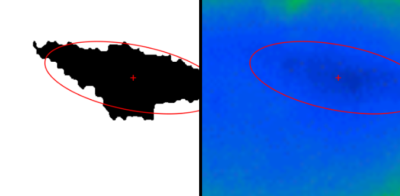

Saccadic Movement Tracker
The first challenge in tracking eye movement is deciding which pixels belong to the pupil. I led the algorithms work on a five-person wearable-tracker team.
What I built
I worked on C++ firmware for infrared acquisition on an Arduino Nano and a MATLAB routine for measuring the pupil. The linked repository contains the image-processing part of that work.
Finding the pupil
Dark pixels are a useful starting point, but they do not all belong to the pupil. The script builds a brightness map, selects a dark region while excluding the black background, then removes small fragments and fills holes to leave one connected shape.
Measurements & outputs
Once the region is isolated, it becomes geometry: a center, two axes, and an orientation. I overlay those measurements on the image so the result can be inspected, and save the mask for later analysis.
